The abbey woodshop
The shop where monks have made kneelers, lecterns, crosses and church furniture, and the wooden boxes for our columbarium. It is quiet for now, waiting for its next carpenter; its tools and its work remain.
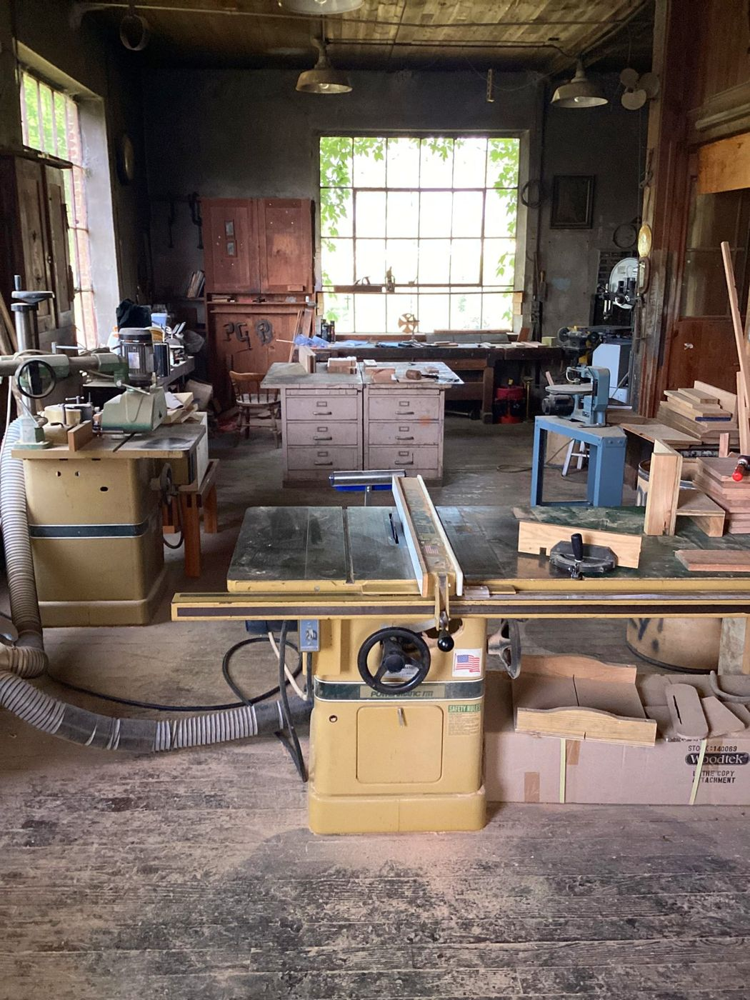
Monks at work
For more than a century the monks of St. Bernard have built, carved, baked, printed and farmed. Br. Joseph Zoettl and his Grotto are only the most famous of their works.
“If there are craftsmen in the monastery, let them practise their crafts with all humility.”
The Rule of St. Benedict, chapter 57 (Artifices si sunt in monasterio…)
St. Benedict wanted his monks to live by the work of their hands, “as our fathers and the apostles did” (chapter 48). Prayer and work are not two lives but one. Here is some of what that has looked like on our hill.

The builder
Michael Zoettl was born in Landshut, Bavaria, and came to St. Bernard in 1892, a boy of about fourteen who meant to become a priest. An injury left him with a hunched back, and he could not be ordained. He became a lay brother instead, made his vows in 1897, and kept house for Benedictine priests in the missions of the South.
Back at the abbey he was given charge of the powerhouse, and for some thirty years worked long days at its boilers. In the spare hours he began to build: small grottoes to sell for the missions, then a little church, then whole cities in miniature, from cement, stone, marble, shells, broken glass, tiles, beads and whatever people mailed him from around the world. He never saw most of the places he built; he worked from postcards and books.
In 1932 his miniatures were moved into the abbey's old quarry, and on 17 May 1934 the Ave Maria Grotto was dedicated. He kept building until 1958, when he finished the Basilica of Lourdes. He died on 15 October 1961 and lies in the abbey cemetery, a short walk from his Grotto.
In his own words
“Why my stepmother wanted me to become a priest I have no inkling. I was not pious, in fact religion became somewhat a burden.”
“It became very tedious, for I had to pump from morning to night every day, Sunday included. To pass time, I started hobbies again.”
“When I had made two grottoes I thought that would be all, but as Father Dominic sold them right away, he always brought more statues and it became a regular business.”
“I told Abbot Bernard I was getting old and could hardly do much anymore but he would not listen, so I started and had plenty to do, never dreamed I would get so old.”
On the move to the quarry, July 1932
From his autobiographical sketch, as quoted in the abbey's Necrology.
Sources: the National Register of Historic Places nomination (1983), the Encyclopedia of Alabama, avemariagrotto.com and the abbey Necrology. Sources differ on some dates; they are given here as the Grotto gives them.
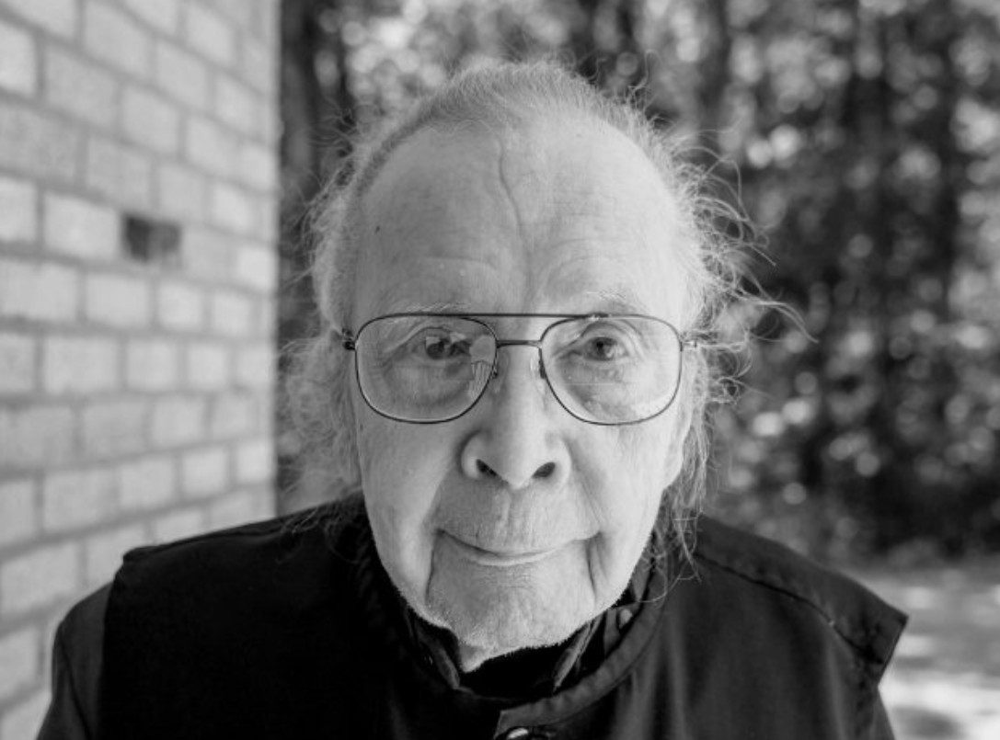
The artist and engineer
Henry Odie Johnston came to us from Florence, Alabama, graduated from St. Bernard in 1951, and made his vows in 1954. He was the last lay brother of the abbey.
He began in the tailor shop, making habits and vestments, then learned ceramics from Fr. Timothy Harrison and was sent by Abbot Bede to study with the sculptor Herbert Jogerst, who carved the statues of our Abbey Church. His bust of Br. Joseph, which he called “my first awkward attempt at portraiture”, is still in the Grotto Shop; his carved Dove of the Holy Spirit hangs over the door of our Chapter Room.
By 1961 he was studying sculpture at Notre Dame under Ivan Meštrović. In time he taught architecture at the Pratt Institute and at Yale, and his statue of the Sacred Heart, a life-size Madonna and a portrait of St. Benedict stood in the halls of St. Bernard. When his eyes would no longer allow fine work by hand, he went on designing by computer into his nineties.
He worked under the name Nov Ontos, “new being”. The Evelyn Burrow Museum at Wallace State, which received his collection, called him “a true polymath”. In his own words: “My work will, I hope, demonstrate in some way what I desire to become, a new being.”
Sources: Cullman Tribune obituary (23 June 2025); One Voice, Diocese of Birmingham; CBS 42 (23 June 2025); Good Life Magazine (2017); Wallace State Community College (2026).
Those who came before
Many of the first monks were Bavarian craftsmen. They built the abbey with their own hands and passed their trades to the young. These are some of them, from the abbey Necrology; we are still gathering their stories.
Do you have photographs, letters or memories of these monks or their work? Please call the monastery at 256-734-8291.
Heroes
The first monks of St. Bernard left Bavaria, their families, their language and everything they knew for the woods of north Alabama. They felled the trees, built the abbey with their own hands, and lived through Alabama summers with no air-conditioning and few of the comforts we take for granted. The monks who came after them were tested in other ways. These are a few of their stories, as the abbey's Necrology tells them.
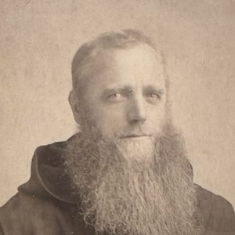
1891
Fr. Gamelbert Brunner gave the land and went home to Bavaria again and again to bring back young men. One of them, Br. Maurus Lindner, “worked like a Trojan” with axe and mattock, levelling the deep-rooted trees of the virgin forest. Years later, as the abbey's butcher, he was gored by a bull from elbow to shoulder, killed it with one blow, and was stitched up without anaesthetic. His only comment: “Such foolishness.”
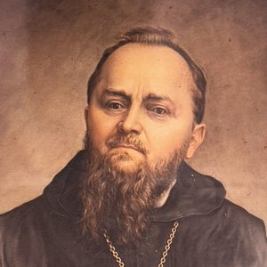
First abbot · yellow fever, 1878
When yellow fever struck Huntsville in 1878 and everyone who could fled, he stayed with the sick and the dying “even to his own danger”. Often sick with malaria himself, he rode through the virgin woods to the labourers at Muscle Shoals.
A founder · the lepers, 1895
When volunteers were asked for as chaplain to the leper colony in Louisiana, he was the first to offer himself. He told the chapter that his life was “rather spent” and there would be no loss if he caught the disease, and he went.
The flu of 1918
A young monk who caught the influenza while nursing the sick through the epidemic. He made his solemn vows on his deathbed, before Abbot Bernard, on 13 October 1918, and died that same day.

The Carnegie Medal, 1929
Ordained in Rome in 1915, he taught English, philosophy and education at St. Bernard. In 1929 he thwarted a prison riot in Colorado at great risk to his life and was awarded the Carnegie Medal for bravery; the 1939 film Mutiny in the Big House tells the story. He went on to forty more faithful years as a professor and drama coach.
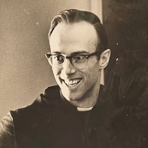
For the unborn · 1939–2019
Pastor, prior and a tireless defender of unborn life. After destroying two abortion machines in 1984 he spent thirteen months in prison. Into his last years he could be seen protesting outside Alabama's abortion clinics, and he died a few days before the March for Life.
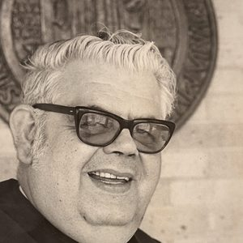
Seventh abbot, 1972–1987
Known internationally for his work with Alcoholics Anonymous, through which, says the Necrology, “he touched countless lives with his wisdom, humor, and love.” A sought-after preacher and retreat master who greeted life “with complete enthusiasm.”
Monks of St. Bernard have served their country in the wars of the last century and since, as chaplains and as soldiers, sailors and airmen, some before they came to the monastery and some after.
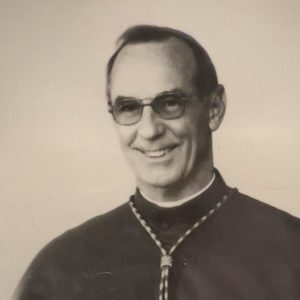
Bishop Angelo Acerra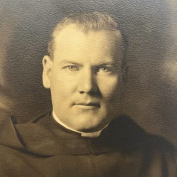
Fr. Eugene Flynn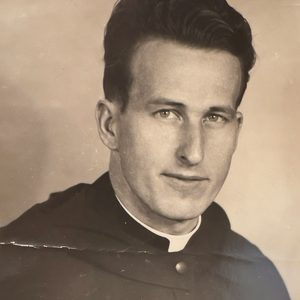
Fr. Mark Mages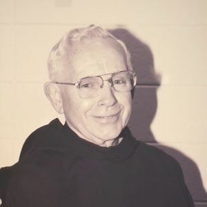
Br. André Couture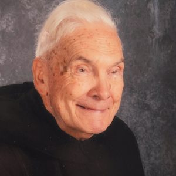
Br. John Paul Brunschwyler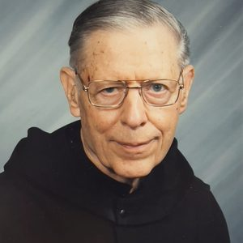
Fr. Thomas O'Connor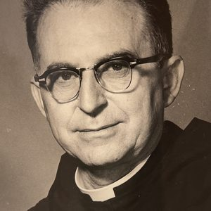
Fr. Ronald VeiglNot every hero is solemn. For years Br. Osmund Oberdoerfer sliced the community's bread by hand. One day he cut off the first joint of his forefinger, and when it healed he cheerfully found that the gap made a perfect guide for the size of his slices, and went merrily on cutting loaves.
They paved the way. If God is calling you to follow them, come and see.
Source: the Necrology of St. Bernard Abbey, read at supper on the eve of each monk's anniversary. Portraits: St. Bernard Abbey Archives.
Ordinary men
So wrote St. Irenaeus of Lyon in the second century: Gloria Dei vivens homo, vita autem hominis visio Dei, “the glory of God is a living man, and the life of man is the vision of God” (Against the Heresies IV.20.7). It is often quoted as “the glory of God is man fully alive.”
Not every monk is a hero, a craftsman or a scholar. The monastery needs, and has always had, ordinary men: cooks and porters, jokers and letter-writers, and many brothers whose whole obituary is that they were cheerful, kind and faithful to the Office. There is room here for every kind of man.
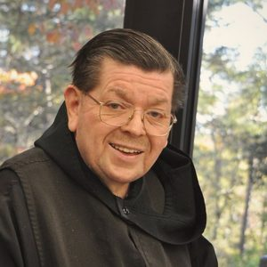
1943–2017
Dormitory director, postmaster of St. Bernard, Alabama, weather reporter for the National Weather Service, Grotto director, subprior, and above all a friend. He wrote to every confrere away at school, remembered each one's favourite candy and found an excuse to buy it, and knew the names of everyone's family. An only child, he wrote at nineteen: “The thing I longed for all my years, a brother or two, I found at St. Bernard, and not just one or two but hundreds.”
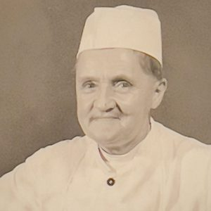
Head chef for forty years · died 1958
He cheerfully presided over the pots and pans and was famous for his “Cannon Ball Soup”. When the college's old horse Charley died, a student looked hard at the stew on his plate and solemnly announced, “Charley's come back!”
62 years a monk · died 1970
An orphan raised by the Sisters of Mercy in Bavaria, who sent the delicate boy to learn glazing and baking. For 62 years he served God and his brothers in prayer and work, faithful to the choir, and he rejoiced when the change to English let all the brothers pray the Office together.
Died 1929
He did odd jobs to live before he came, and for twenty-three years did “all sorts of menial tasks” on the farm, in the woods and in the kitchen, cheerfully doing whatever he was asked. He died at the supper table, among his brothers.
A founder, the first baker · died 1901
“Tall, rugged and red-haired,” the chronicler wrote, “possessing the body of a giant, he was sweet and docile as a child.” He hid his last illness and kept working until he could not.
Died 1979
A man of great stature and Herculean strength who made cement blocks for Maurus Hall and raised a splendid herd of Black Angus, and at the same time “very gentle and considerate”, a good community man, prayerful and dutiful.
Our own Br. Irenaeus carries the saint's name. If you have wondered whether you are holy enough, clever enough or skilled enough to be a monk, look at these men. Come and see
Source: the Necrology of St. Bernard Abbey. Portraits: St. Bernard Abbey Archives.
Scribes
Benedictines have copied and kept books for fifteen centuries. At St. Bernard the scribes have also been scientists, historians and men of letters.
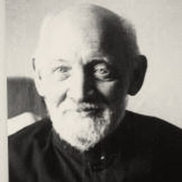
Botanist · died 1950
He came as the abbey's tailor knowing nothing of botany, grew fascinated by the plants in the woods around him, and taught himself until he had a worldwide reputation. He published new species, Talinum mengesii and T. appalachianum, and, in 1941, Erythronium Harperi and E. Rostratum, and discovered and described two hybrid oaks, which he called Quercus Bernardianis and Quercus Capesii.
Copyist and choirmaster · died 1946
Studying music at Ottobeuron in Bavaria, he collected the finest chant melodies for the great feasts, copied them by hand into huge choir books and illustrated them gloriously. The books still survive; they were sung from until the change to English.
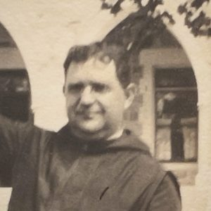
Printer · died 1935
A printer's apprentice before he came, he rebuilt an old press from St. Vincent's, set the type by hand and printed the college's catalogues. He also taught mathematics and led the orchestra and the brass band.
Third abbot · died 1938
Missionary to the mountains of Kentucky for thirty years and author of The Benedictines in Alabama, the abbey's first history, which Br. Leo has brought back into print.

Librarian · died 1960
The abbey's first doctor of philosophy (1929, economics). For twenty-five years he kept the college library and, it was said, knew every one of its thousands of books by name and author.
Historian · died 1992
Doctor of history, president of St. Bernard College and a member of the Alabama Academy of Science. His accounts of his travels are among the books Br. Leo has reprinted.
Man of letters · died 1988
A noted Faulkner scholar who, until his death, edited the St. Bernard Times, the community's letter to its alumni and friends.

Today
Edits and reprints the books of the abbey's history, so that the scribes of the past can still be read.
Source: the Necrology of St. Bernard Abbey. Portraits: St. Bernard Abbey Archives.
The craftsmen today
The abbey's history books · ceramics
Br. Leo edits and reprints the books that tell the abbey's history, bringing them back into print. A former prior, he now lives as a hermit near the abbey cemetery. He has long taught ceramics, and for years taught Latin at St. Bernard Prep, where his students won gold medals on the National Latin Exam.
Painted ceramic churches
A Philadelphia native who first came to St. Bernard as a college student, Fr. John has been Grotto manager, athletic director at the Prep, subprior and a parish priest. Today he paints small ceramic churches, sold at the Grotto: Br. Joseph's little shrines, in a new form.
Novice · artist
An artist who entered the novitiate and took the name Nicholas to follow in the footsteps of Br. Nicholas Weiss, the abbey's woodcarver. He drew the campus map for the Bloomin' Festival, a fitting echo: the abbey's original campus map is thought to be the first Br. Nicholas's work. The newest hands in a long line.
Sources: St. Bernard Prep (2012–13), the Cullman Tribune (22 May 2017), and the community.
The work today
The shop where monks have made kneelers, lecterns, crosses and church furniture, and the wooden boxes for our columbarium. It is quiet for now, waiting for its next carpenter; its tools and its work remain.

Bread and cookies baked by the monks, sold at the Grotto shop.
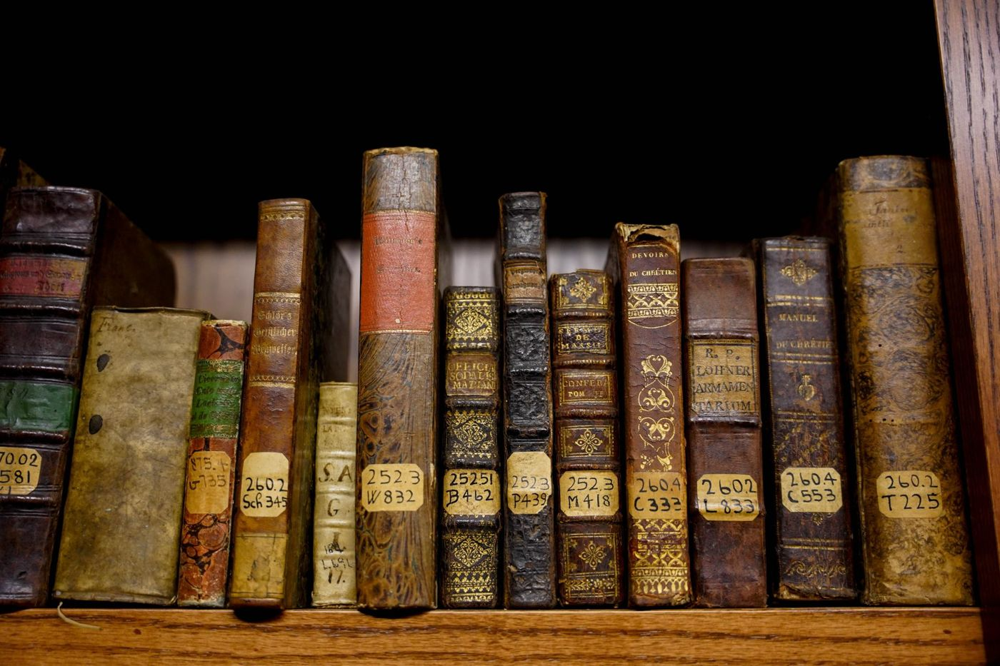
Br. Leo edits and reprints the abbey's old books: Fr. Aloysius Plaisance's travels and letters, and Abbot Ambrose Reger's The Benedictines in Alabama. They are sold at the Grotto shop.
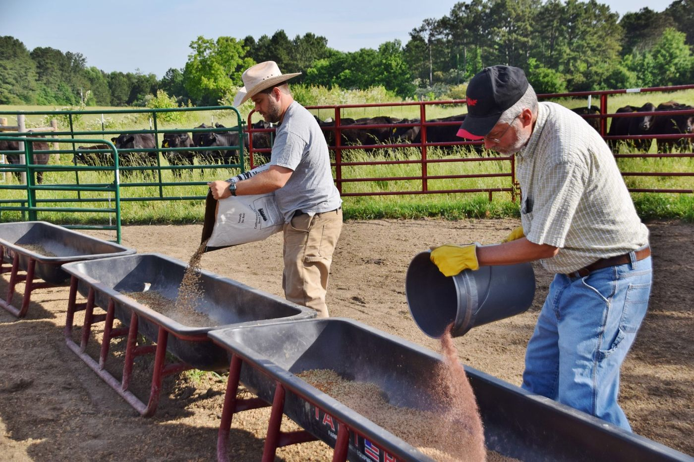
A small beef-cattle herd, about forty chickens and a garden, on more than 800 acres of woods and fields. The monks reopened the farm in 2014 and welcomed its first calf that December. Abbot Brendan, its longtime director, can still be seen working there: that is he on the right, in the cap.
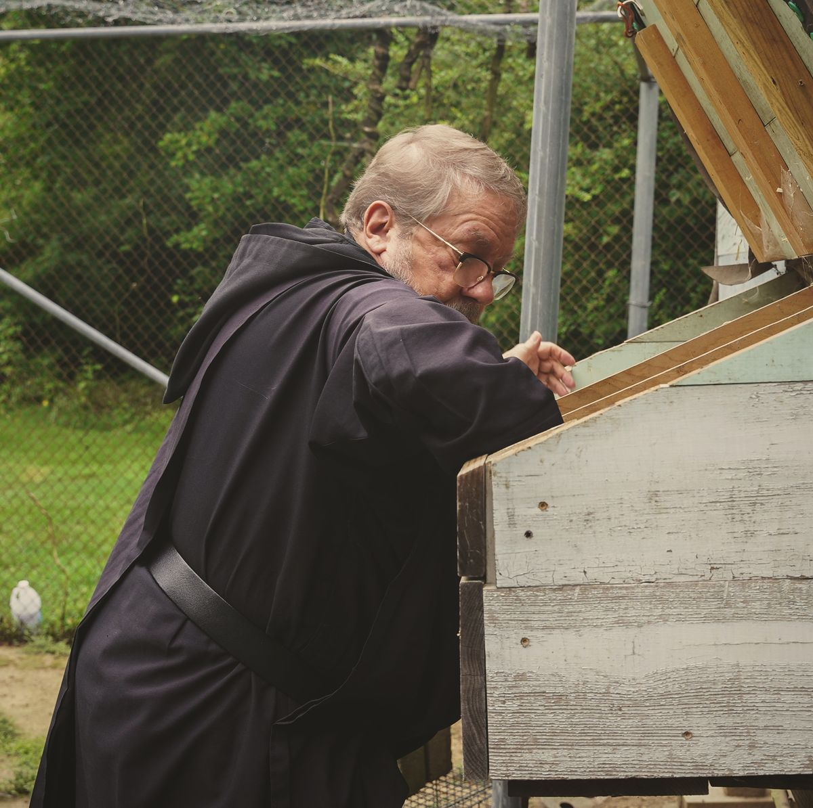
About forty chickens keep the community in eggs. For years Br. Christopher looked after them; here he is collecting the morning's eggs from the nesting boxes.
Photo: Anne Stephens, July 2024
Fr. Bede, the abbey's tailor, makes the monks' habits; he learned the craft at St. Bede Abbey in Illinois. Monks also make candles, cut hair, keep the grounds, care for guests, and teach at St. Bernard Prep.